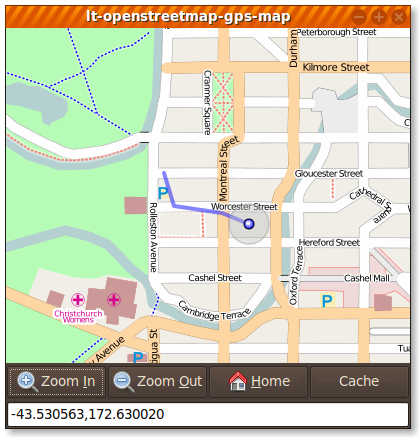

A Gtk+ Widget for Displaying OpenStreetMap tiles.
A Gtk+ widget (and Python bindings) that when given GPS co-ordinates, draws a GPS track, and points of interest on a moving map display.
Downloads map data from a number of websites, including openstreetmap.org.

Currently supports a number of different mapping sources
- openstreetmap (default)
- maps-for-free
- satellite maps from a number of proprietary providers
It also has the following features
- Intelligent, flexible and customizable caching of maps, including the ability to request a specific area of the map to be cached ahead of time
- Recording of points of interest on the map (and the ability to add arbitary pixmaps at those points
- Automatically draws a GPS track (a line showing the history of past added points)
- Automatic centering on new GPS points
- Support for multiple other tracks of co-ordinate points
- Adjustable Zoom
- Built in support for keyboard navgation
- Includes a comprehensive example
- Simple, flat API
Dependencies
- libsoup 2.4
- gtk+
- cairo
- pygtk-dev (optional, for python bindings)
Install
./configure; make; make install #C library
cd python; ./configure; make; make install #Python bindings
License
Authors
- John Stowers
- Till Harbaum
- Alberto Mardegan
- Mark Cottrell
- Originally based on tangoGPS by Marcus Bauer
Contact
Download
You may download any of the following archives
You can also clone the project with Git
by running:
$ git clone git://github.com/nzjrs/osm-gps-map